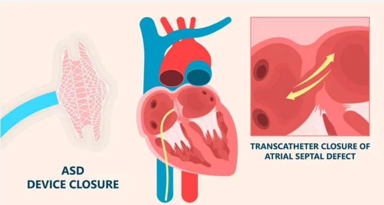

Device Closure of ASD (Atrial Septal Defect) is a specialized medical procedure used to treat certain types of congenital heart conditions. ASD is a congenital anomaly where there is a hole in the wall (septum) that separates the upper two chambers of the heart (atria). This opening allows blood to flow between the atria, which can lead to various health issues if left untreated.
Device closure is a minimally invasive technique designed to close the ASD without the need for open-heart surgery. Instead, a specialized device is used to seal the hole, effectively preventing abnormal blood flow.
How is the Procedure Performed?
- Before the procedure, the patient is usually given a mild sedative or local anesthesia to help them relax.
- A thin, flexible tube called a catheter is inserted into a blood vessel, typically in the groin, and guided towards the heart.
- Using imaging techniques like echocardiography and fluoroscopy, the cardiologist guides the catheter to the site of the ASD.
- Once in position, the cardiologist deploys the closure device. This device is made of two discs or disks connected by a narrow waist.
- The device is carefully positioned to straddle the ASD. The discs are opened on either side of the hole, effectively sealing it shut.
- Over time, heart tissue grows over the device, permanently securing it in place.
- After ensuring the device is securely in place and the ASD is closed, the catheter is withdrawn, and the procedure is complete.
Who is the Right Doctor for Device Closure of ASD?
The procedure is typically performed by an Interventional Cardiologist with expertise in congenital heart interventions. These specialists have advanced training in using catheter-based techniques to treat various heart conditions, including ASD. It's essential to choose a healthcare facility with a specialized team experienced in congenital heart interventions to ensure the best possible outcome.What is included in the cost of Device Closure of ASD?
The cost of Device Closure of ASD typically includes:- Preoperative diagnostic tests (such as echocardiography and cardiac catheterization)
- The closure device itself
- Surgical and anesthesia fees
- Postoperative care and follow-up visits
What are the factors affecting the cost of Device Closure of ASD?
The total cost of the procedure can vary based on several factors:- Location and reputation of the healthcare facility
- Type and brand of closure device used
- Extent of preoperative testing and evaluations
- Any additional procedures or interventions required
- Insurance coverage and benefits
Cost related to Angiography
| Treatment name | Cost range |
|---|---|
| ASD (Atrial Septal Defect) Closure | Rs.217560 to Rs.290080 |
| Device Closure- ASD VSD | Rs.208680 to Rs.278240 |
| PDA Device Closure | Rs.186480 to Rs.248640 |